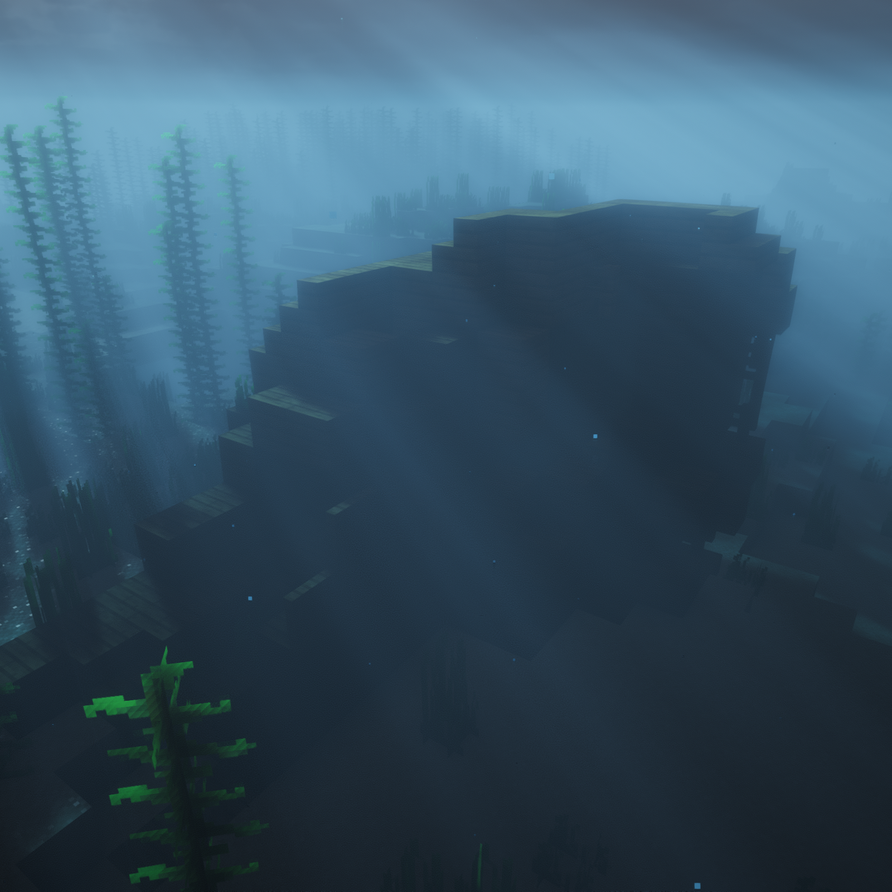
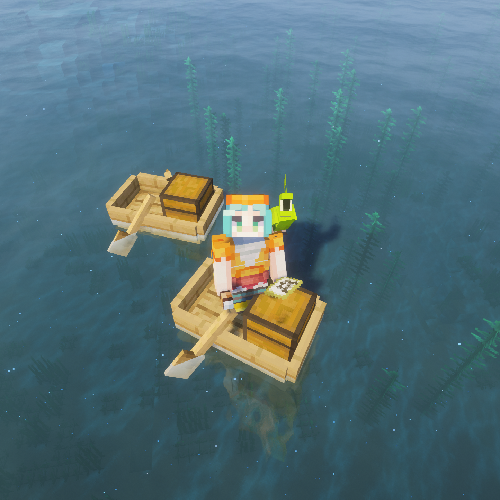
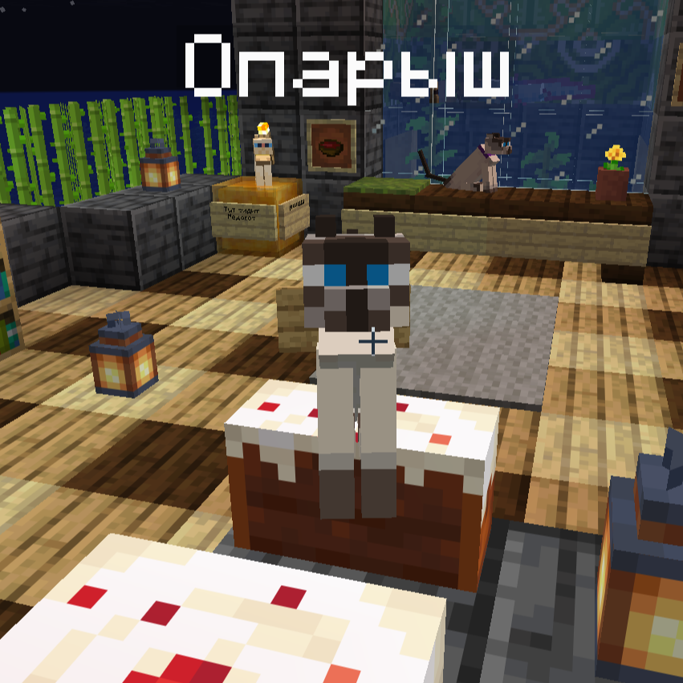
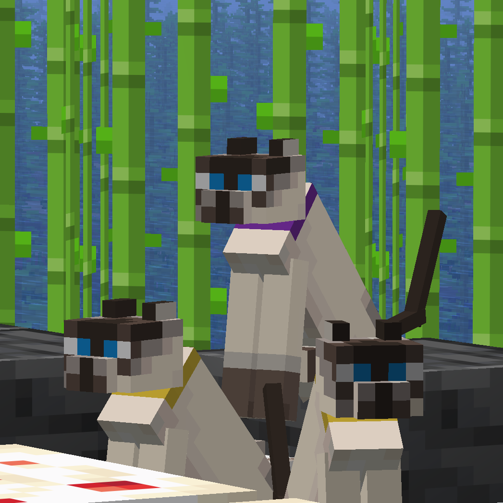
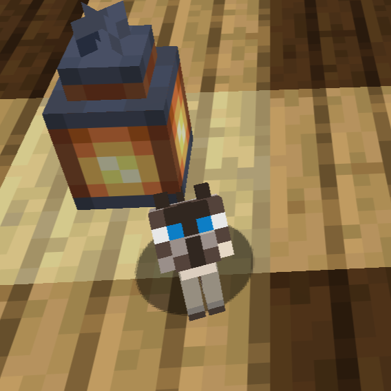
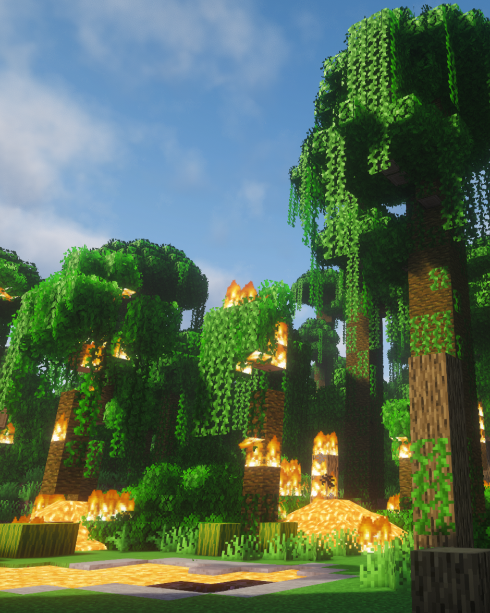
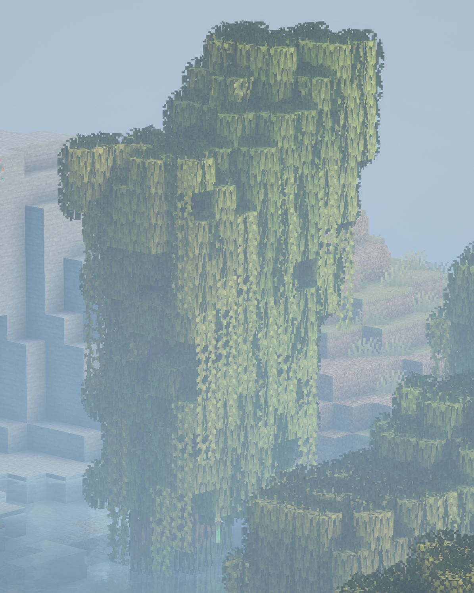
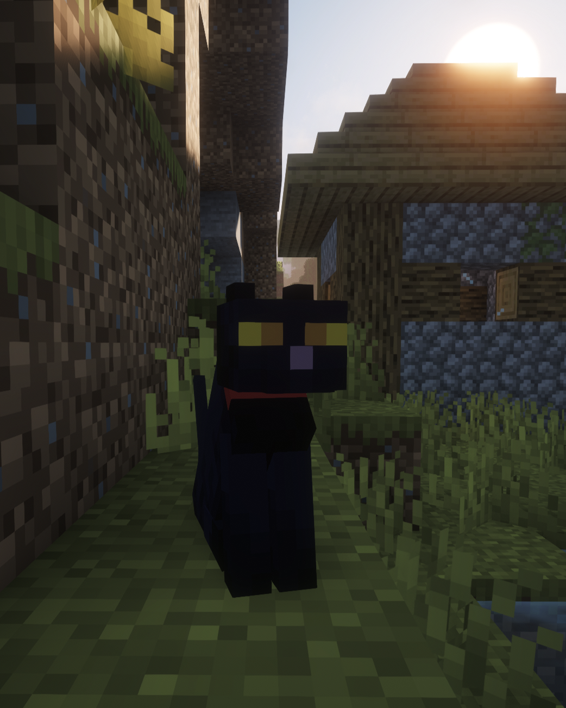
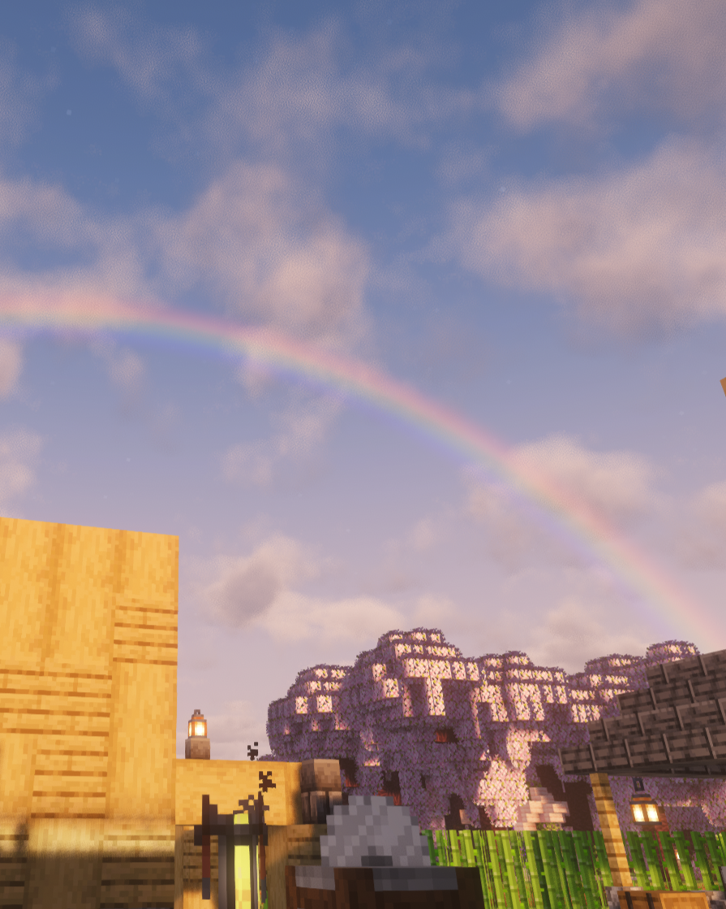
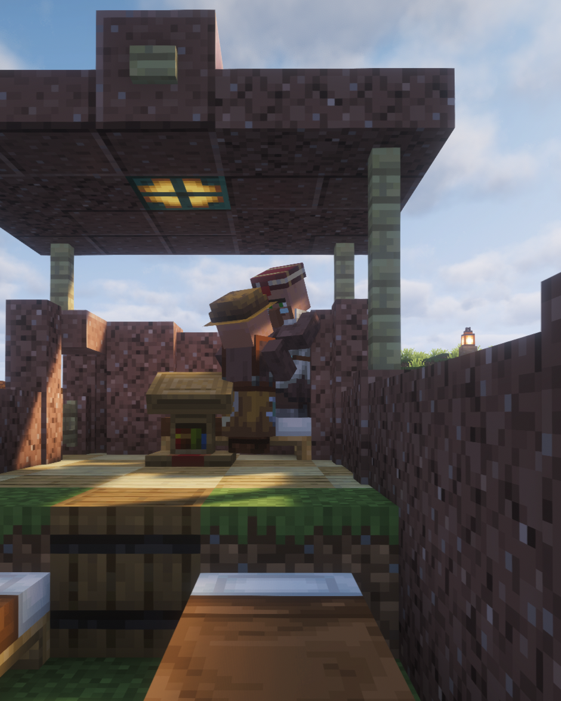

Опарыш
Один из наших дражайших котиков

Трио сиамышей
Банда охранников торта

Малявка
Этот бро такой smol 😭
Люблю запах напалма по утрам
Однажды, пока выкапывал тонну песка, решил помочь озеру лавы неподалёку уничтожить джунгли. Оно само, правда (‾◡◝).
Подробнее

Дерево-аномалия
Высоченное мангровое дерево, которое сгенерировалось естественным образом. Чудо природы, не иначе.
ПодробнееИнтересный факт
Хотя мы выбрали место для базы почти случайно, рядом оказалось много деревень и полезных ископаемых. Открытый выход к большому морю позволяет удобно пользоваться лодками для передвижения по местности.
Подробнее
Черныш
Мой первый ведьминский котик, встреченный мной во время путешествия. Он, бедный, ещё ждёт меня на далёком берегу в далёкой деревне.
ПодробнееИнтересный факт
Несмотря на то, что мы давно нашли портал в измерение Энда, из-за нагруженной учёбы мы так и не убили дракона. Все материалы уже подготовлены, броня зачарованна, ножи наточены (๑•̀ㅂ•́)و✧.
Подробнее
РАДУГА🌈
Ещё одно чудо природы. Сразу после дождя, перед высадкой бамбука, на рассвете появилась радуга, предвещавшая хорощий день.
ПодробнееИнтересный факт
В таблице статистики игроков есть много пасхалок и забавных имён. И несмотря на то, что сорок восемь людей были выдуманны с помощью рандомизатора, хотя бы двое реальны и иногда играют на сервере.
ПодробнееИнтересный факт
Статуя кота была построенна No_Awebo не с помощью гайда по Minecraft статуям, а.... с помощью интрукции от лего! Однако этот котик получился очень хорошо и теперь мир наполнился вайбом креатива (●'◡'●).
ПодробнееВнезапная постельная сцена
Недавно спасённые мной жители уже расслабились достаточно для продолжения рода.
Подробнее